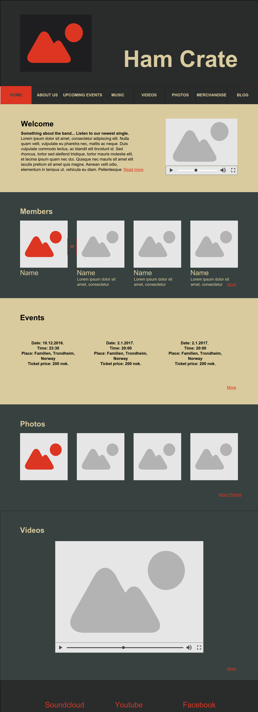
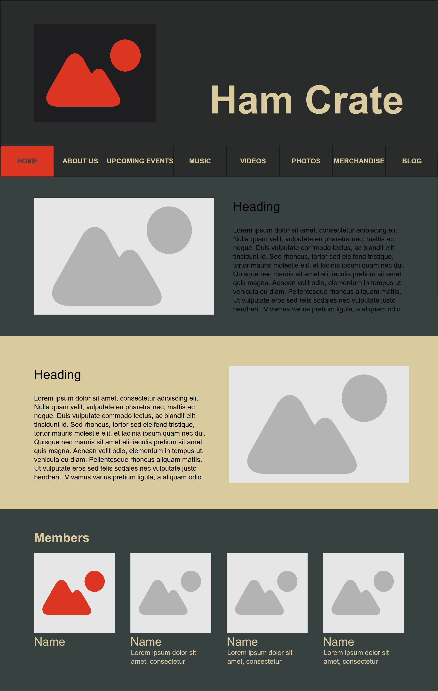
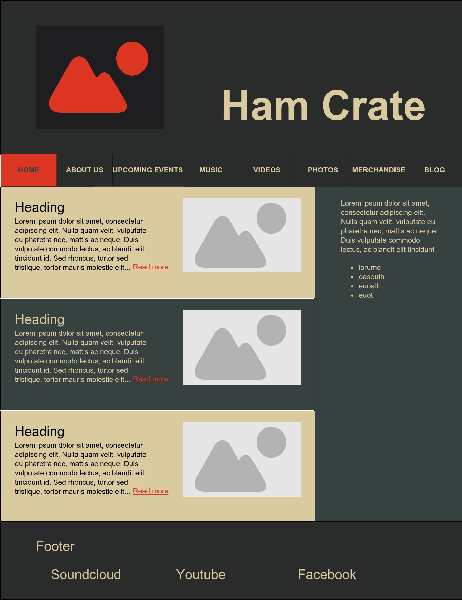
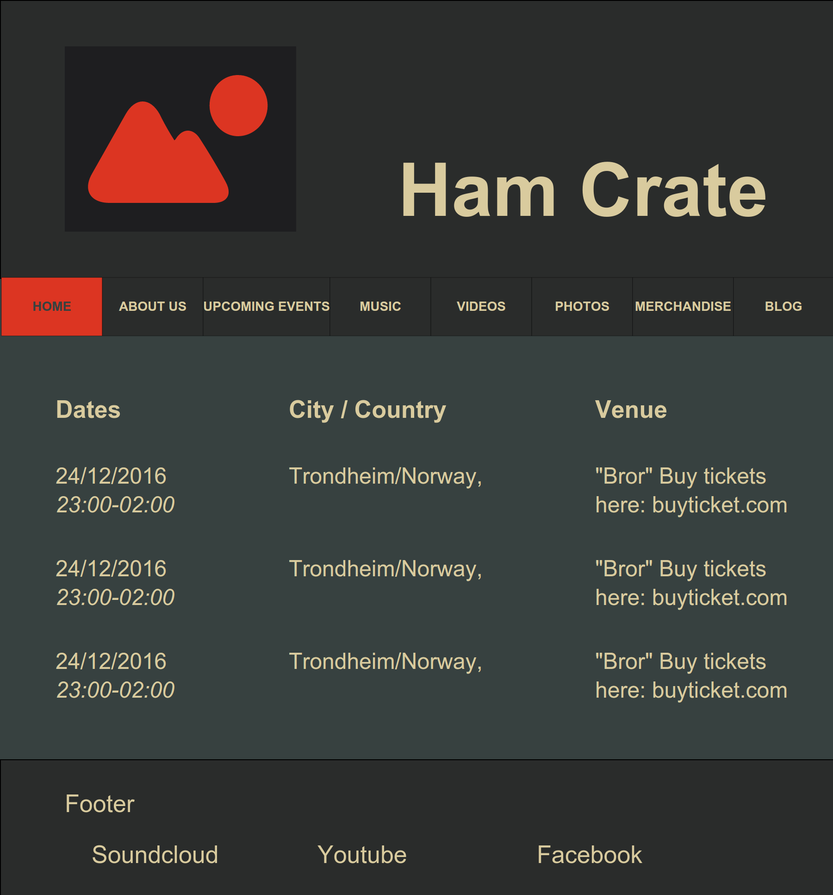
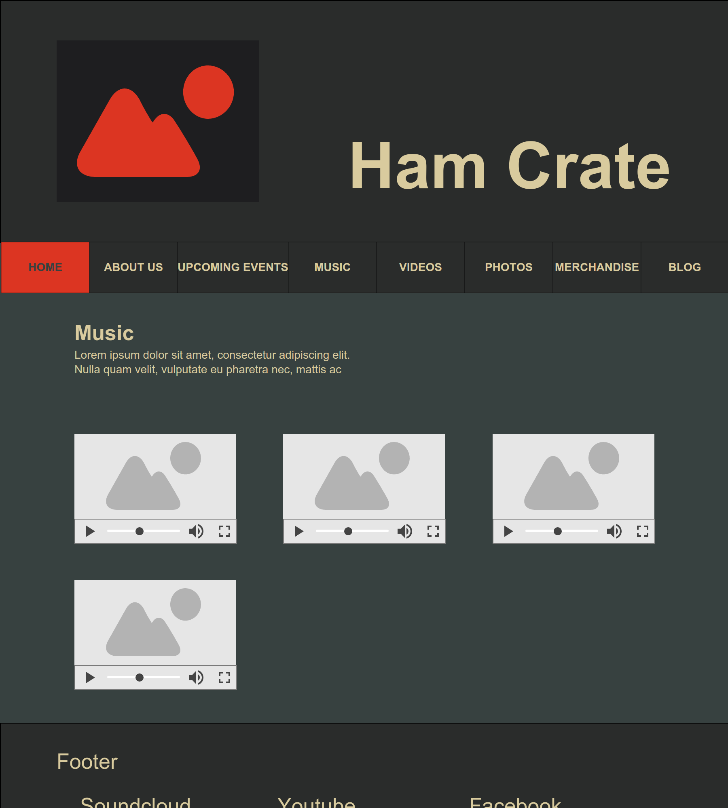
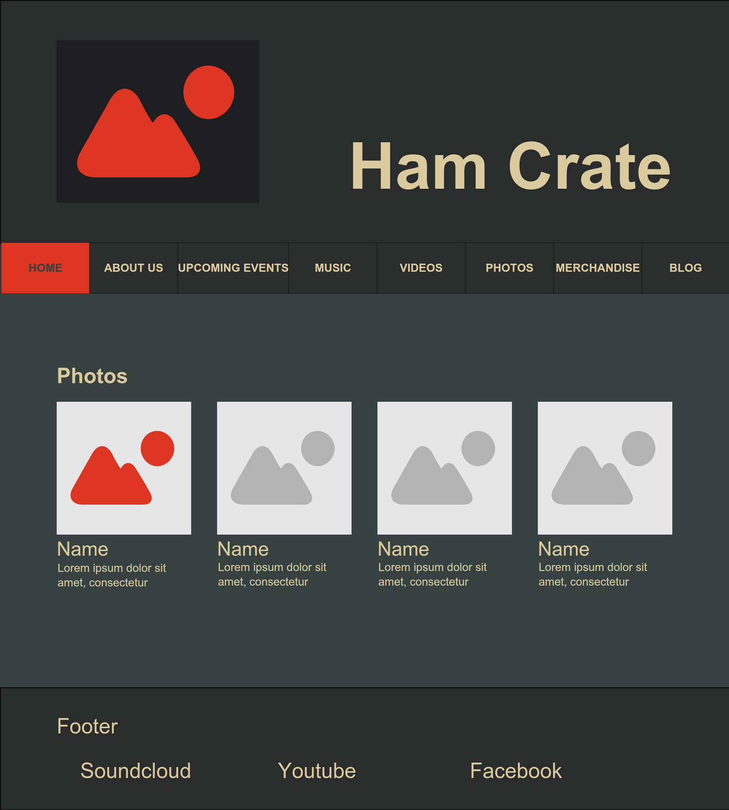
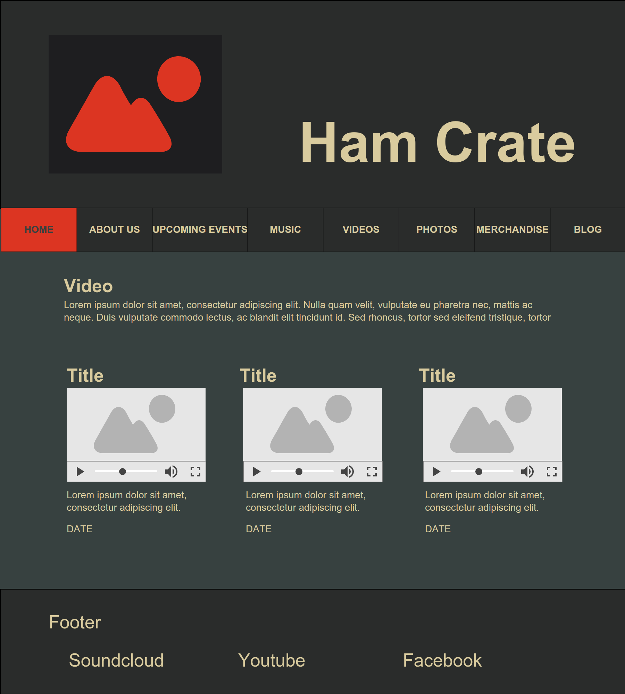
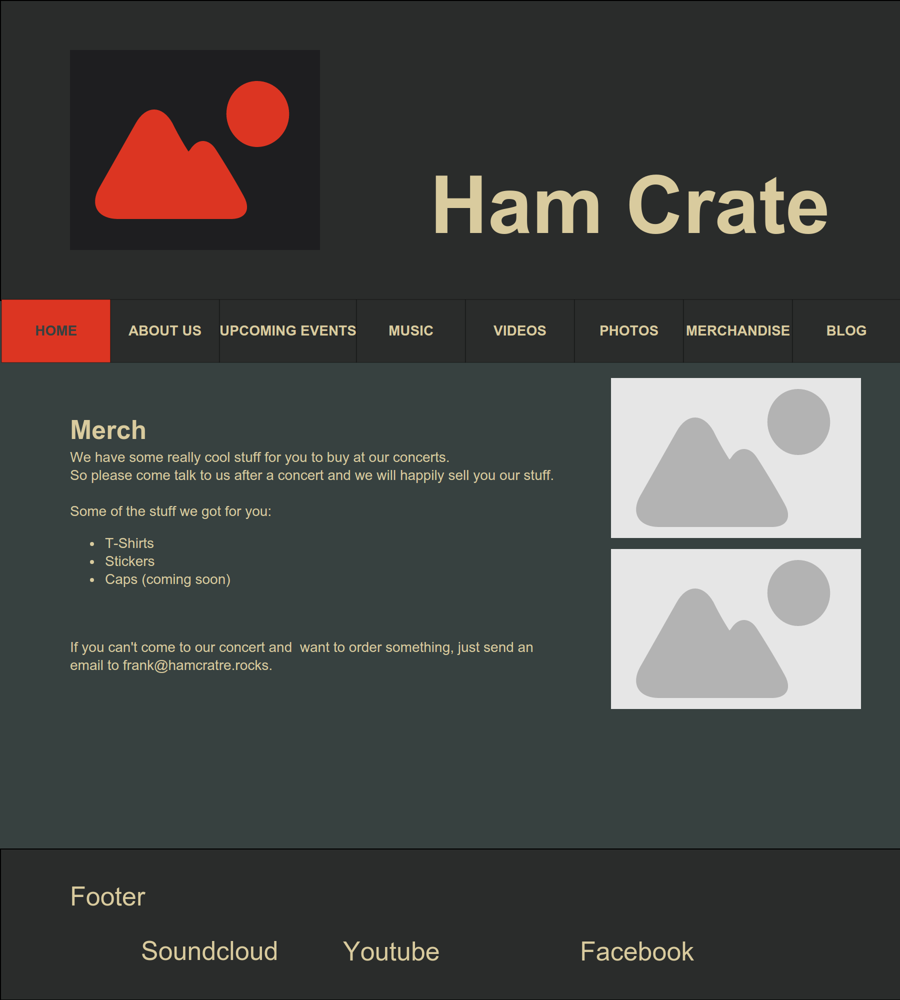

Our client is the band Ham Crate.
Our contact person is Frank Crate.
Ham Crate is a newly started band, starting to get a few streams on SoundCloud. Frank is the main vocalist in the band. He is the spokesperson for the band and will be the one we communicate with and he will be our link to the band. It is also his responsibility to make sure that the demands from the band are communicated to us.
Site’s purpose and goals
The main goal of the web site is increasing the popularity of Ham Crate. This means getting more streams on SoundCloud, more views on YouTube and more people on concerts. This can be accomplished by supplying new music and pictures from concerts, as well
as an appealing design and impression of professionality. Another goal is keeping existing supporters and satisfy their wishes. To accomplish this, we plan to supply existing supporters with information about the band. This includes history,
information about band members, and upcoming events.
Navigation Structure
The navigation structure can be described as a clique: Every webpage can be accessed from any webpage. However, the clique can be pictured as a hierarchical system, with the home page being the principal node:
The main web pages are accessible through the navigation bar, which is always visible on the top of all web pages. In addition, the home page contains a kind of summary of the most important content. The home page can be scrolled to view sections containing the most important part of the website, and it also links to them. Examples of sections on the home page are latest blog post, latest images and videos, and band member information.
We have chosen a clique structure because of higher usability for the users. With this structure, the user can access any content with a single mouse click. It is also easier for the users to get an overview of the content that is actually available. A disadvantage with this kind of structure might be a messy interface if there are many pages. However, as the amount of content is quite small, the site won’t be too messy.
It doesn’t make sense to make up some complex hierarchical structure. Also, a linear structure won’t be natural.
Page Layout and Appearance
The general structure of the site is as follows:
Header which includes a logo and Big Text for the band name (The font-size is 80 px) and the Background color is greyish-black (#2A2C2B). Color for the text is beige (#D9CB9E).
In-between the header and the content, section we find the nav-bar. When scrolling down the page, the navbar should follow so that hte user always has it accessible. The color of the nav-bar should be greyish-black (#2A2C2B) and selected element should be tranquilizing-red (#DC3522). Text-color on greyish-black should be beige and text-color on tranquilizing-red should be almost black (#D9CB9E).
Then we have the content section. The main background color should be dark-greenish ( #374140). Sometimes a lighter beige background color is used on some divs to separate the sections. The text color on the page is in general beige (#D9CB9E), but if the section is beige, then the text should be almost black (#D9CB9E).
After the content, at the bottom of the page, there is a footer. The footer contains links to some relevant social media sites. All links in the page should be tranquilizing-red (#DC3522) with an underline.
Take a look at the mockup to get a better feel for the website (unless you got crazy skills in visualizing things in your head).
To sum it up in a better structure:
Font
Font-family:
Helvetica
Sizes:
h1: 26 px
h1: 20 px
h3, h4, 5: 18 px
p: 14px
Colors
Color scheme:
#DC3522, #D9CB9E, #374140, #2A2C2B, #1E1E20
Main background-color: #374140
Alternate background-color: #D9CB9E
Text colors:
On dark background: #D9CB9E
On light background: #1E1E20
Link color: #DC3522
Shadows: #2A2C2B
Borders: #2A2C2B
The website should be center-aligned.
The viewport in the mockup has a width of 900px.
The website should be compatible with both mobile and computer-viewports. Thus i have provided you with two generic mockup-pages.
Generic Mockup - Computer
NB: The red rulers are there to illustrate the spacing between objects and not a part of the design.
Generic Mockup - Mobile
As you can see from the mockup, the flow of the document responds to the smaller viewport. The navbar is collapsed into a (hamburger) drop-down menu, to make it more accessible on e.g. mobile phones.
The design choices that is made is to reflect the personality of the band. Colors are mostly dark with light, something that Frank talked a lot about when he described the band Ham-Crate for us. Also we think the site is pleasing to look at and something that fit our target group.
Content
Front page

The front page is perhaps the most important page and will be designed so it will meet the needs of the viewers it is intended for. It will be a dynamic page with all the information a new visitor would want at a glance and the possibility to go into separate pages for each item with more information. These individual pages are described below and will be accessible from a menu bar at the top of the page.
The front page will be made up of different segments with the latest information, pictures, videos etc. These will stand underneath each other and will have different shades of grey in the background to mark the different elements. At the top of the page there will be the name of the band with a logo in the center. Underneath it there will be an easy accessible menu if you want to go directly to a page with all the content, for example the photo-page with all the different albums from different places. When you scroll down the page, the logo will disappear, but the menu will always stay on top of the page, no matter which page you are on, so you can easily maneuver from the different pages. The menu-bar height will be 60px so that it is easy visible at all times and the page that you are on will be highlighted in the menu by a red color, to give the user visual feedback of what page he is on.
The elements that will be include on the front page are as follows:
Blog
The first element to be shown on the front page is a preview for the blog. Here the latest blogpost will be shown. The element will be 300px high, so there will only be some of the text show if it is a long post. If there is a picture in the blogpost, it will be shown to the right in the element and will be of size: 250x195At the bottom right, there will be a link to read more at the designated blog-page.
Members
There will be 4 circular photos across the width of the page, one for each band member. The circle will have the size 166x166 Underneath each picture the name of the band member will be written. If you press one of the pictures, the picture will move to the left. Next to it there will be a short description about the selected band member. The front page will be in the background, turned opaque. If you clique outside the picture or the text, you will return to the front page.
Next event
The next three events and their locations will be shown in a grid format. For more dates and places, there is a link at the bottom right of the segment that links to the page upcoming events.
Photos
Four pictures from the latest album will be displayed in small thumbnails (166x166). You can press one of the pictures to get view it in large and maneuver through all the pictures that are in this album. In the bottom right corner you can press a link that says more… and you will be directed to the page with all the photo albums which will be presented later in this text.
Videos
The latest video to be posted is displayed here. It is showed in a small version to save space and loading time for the page, but it can be clicked and then viewed in a size that fills the screen. Also her there will be a link to the page with more videos of the band and such.
All these elements and the layout chosen is made this way to accommodate new potential fans. This way they get information about the band quickly and can listen to some of their music and see pictures from the latest event, because maybe that's where they heard about the band for the first time.
Individual pages, in addition to being on the front page
About

A short description of the band and its history. Maybe a discography.
This will have a typical article format. At the top there will be a picture of the band. Then a short history of how the band was formed and such before there will be a section with a short bio about the band members. This will consist of the same pictures and text that could be found on the front page. The first picture will be on the left side with text on the right of it. The second picture will be on the right with the bio to the left of it and so on for the two last posts. This will create a good looking layout that will be pleasing to view.
Blog

The blog will consist of short blogpost ordered in a table. The band does not want long boring blogpost so they will limit each blogpost to maximum of 600 signs. So the page will be made up of small elements with each blogpost stacked underneath each other with pictures to the right, if there are some.
Upcoming events

A list of shows and location. Maybe a link to where you can order tickets.
The page will be built up of three columns, but without visible lines like in a table. In the first column, the dates are listed, starting with the closest show in time. The second column has the city and country and the last column will have the venue. When it is accessible, we will also link to the site where you can order tickets for the different venues. By having a list like this, fans can easily find out where the band is performing next or find the next time they are performing in a city close to them.
Music

Here some of the band’s music will be put up for fans to have a listen to a few of the greatest hits. The music will be retrieved from the band’s soundcloud site and be put in a grid showing as many elements as the viewport allows in horisontal axis, then following up under with the remaining elements. Soundcloud has a script that we will use with graphical interface. This will allow new visitors to get to know some of the band’s music and become fans and for fans to listen for free to some of their favorite songs. The page will only include at most 5 songs, so that visitors will buy a cd or listen to it on spotify to get more.
Photos

An awesome-looking gallery of pictures from shows and on the road. Maybe a display of pictures from the band’s Instagram account.
The page will be arranged with album thumbnails (166x166) in a grid format, with three albums in each row. Under each thumbnail there will be a short description about what and where the pictures are from. This will reduce the loading time and make it easier for a user to find the pictures that he wants. A user can choose an album he wants to check out and it will open as a large image (size depending on img), scaling to fit the viewport, and the user can navigate through the images by clicking on the right or left side of the image. The rest of the page behind the album being shown will be dark to not take attention from the pictures.
Videos

Music videos and vlogs (video-blogs) from life “on the road”.
The video-page will be arranged the same way as the music-page. Videos will lie in a grid with three videos in each row and you can make it fill the page so you can view it in all its glory. The videos will be hosted on youtube, where they lie in the band’s youtube page. The videos will be sorted by when they are published, with the newest videos in the top left corner. This will make it easier for visitors to find the content they want. Each video will also have a short description of the content and date published underneath it.
Merchandice

Here we will have a page to showcase all the merchandise that dedicated fans can buy: such as t-shirts, music, posters or an all exclusive signed ham crate with real ham from the ham producer Stabburet.
The page will be structured with all the products being shown underneath each other with a picture of the product (160px) to the right and a short description of the product with sizes available, colors etc. At the bottom it will say that if you want to order something, just send an email to frank@hamcrate.rocks.
Minimum Requirements
We plan to fulfil the minimum JavaScript requirements by implementing the four functionalities listed below. Each of the group members will be in charge of one functionality.
Band member info textbox. When clicking the image of a band member, a textbox with info about the member should show up. A maximum of one textbox should be visible at given point of time.
Image and video focus. When choosing an image or video, it should enlarge and center on the screen, and the background should be in grayscale. This will enable the users to focus on the content of the media.
Image slideshow. New images should appear automatically after a certain time limit. When clicking on arrows on the left and right of the image, new images should appear.
Menu button fading. When hovering over menu buttons, the buttons should fade in. This contributes to make transitions more smooth.
Plan
The following scheme shows our intended organizational strategy for creating and storing files for the web page.
Organizational scheme for files
folder/
index.html
about.html
events.html
music.html
videos.html
photos.html
merchandise.html
blog.html
img/
apple-touch-icon.png
logo.png
blog1.jpg
blog2.jpg
blog3.jpg
merch1.jpg
merch2.jpg
merch3.jpg
...
members/
member1.jpg
member2.jpg
member3.jpg
member4.jpg
member-all.jpg
gallery/
gallery1.jpg
gallery2.jpg
gallery3.jpg
gallery4.jpg
music/
music1.mp3
music2.mp3
music3.mp3
video/
video1.mp4
video2.mp4
video3.mp4
css/
main.css
js/
main.js
favicons/
android-chrome-192x192.png
android-chrome-512x512.png
apple-touch-icon-120x120.png
apple-touch-icon-152x152.png
apple-touch-icon-180x180.png
apple-touch-icon-60x60.png
apple-touch-icon-76x76.png
apple-touch-icon.png
favicon-16x16.png
favicon-32x32.png
favicon.ico
Work division and deadlines
Note that the deadline denotes when the work should be finished. We will however start doing work on later parts of the project at an earlier stage, if we have time.
Filename
Description
Responsible
Deadline
HTML and CSS
Site template
Everyone
16. nov
index.html
The front/home page.
Henry
23. nov
about.html
Description of the band and its history.
Nils
23. nov
blog.html
Blog archive.
Magnus
23. nov
merchandise.html
Showcase of merchandise.
Daniel
23. nov
music.html
Samples of the band’s music, soundcloud.
Nils
30. nov
photos.html
An “awesome-looking” gallery of pictures.
Magnus
30. nov
videos.html
Page for viewing music videos and vlogs.
Magnus
30. nov
events.html
A list of shows and locations.
Daniel
30. nov
JavaScript
Band member info textbox
Daniel
6. nov
Image and video focus
Henry
6. nov
Image slideshow
Magnus
6. nov
Menu button fading
Nils
6. nov
Content from the client
We can fill the web pages with dummy content when developing the site, but should have some time to adapt the actual content to the site before our deadline.
Description
Deadline
Images
Four band member pictures for the front page.
30. nov
A picture of the band together, for the about page.